錢大姐
角色初稿 · 原生1536×1024 · 待驗收
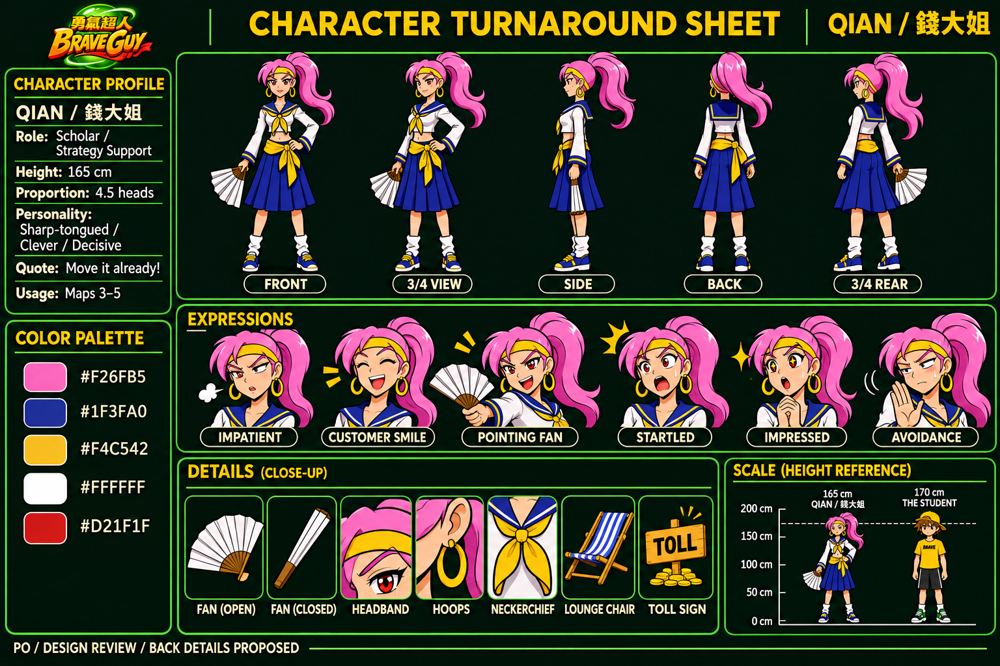
藍教頭
角色初稿 · 原生1536×1024 · 待驗收
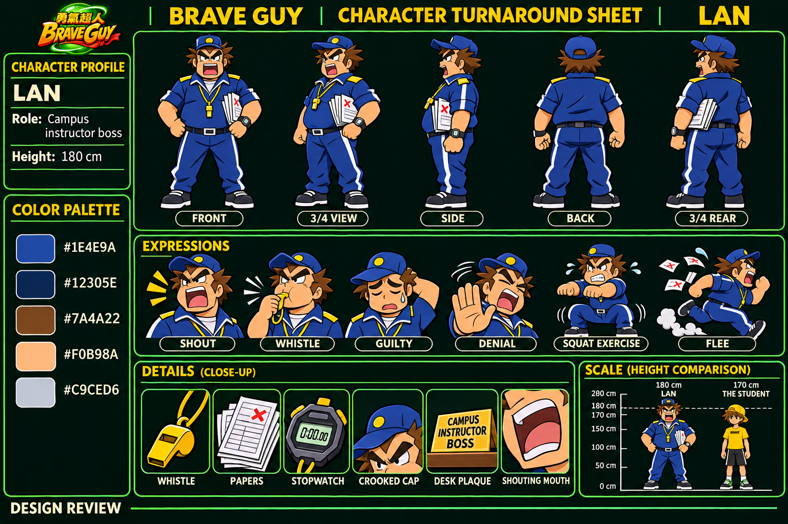
假森
角色初稿 · 原生1536×1024 · 待驗收
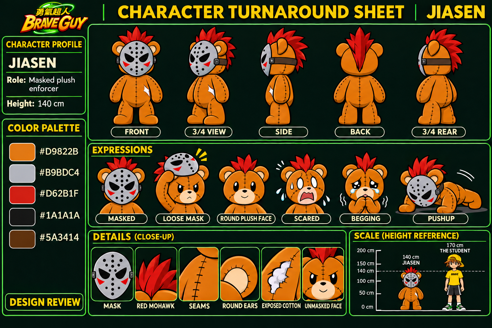
佛賴弟
Logo 修訂稿 · 原生1536×1024 · 待驗收
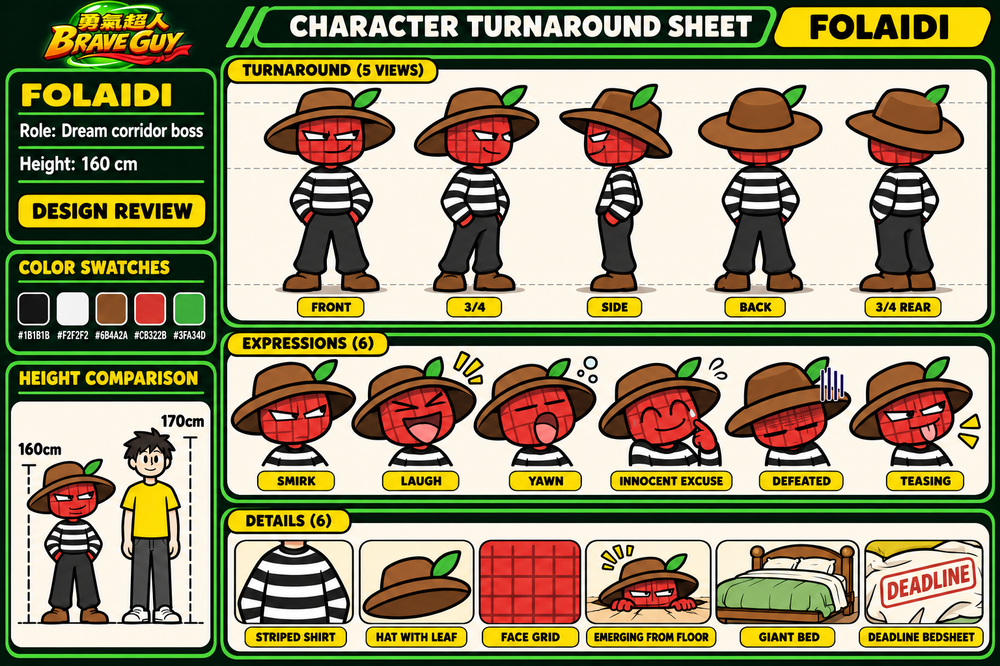
俊熊
角色初稿 · 原生1536×1024 · 待驗收
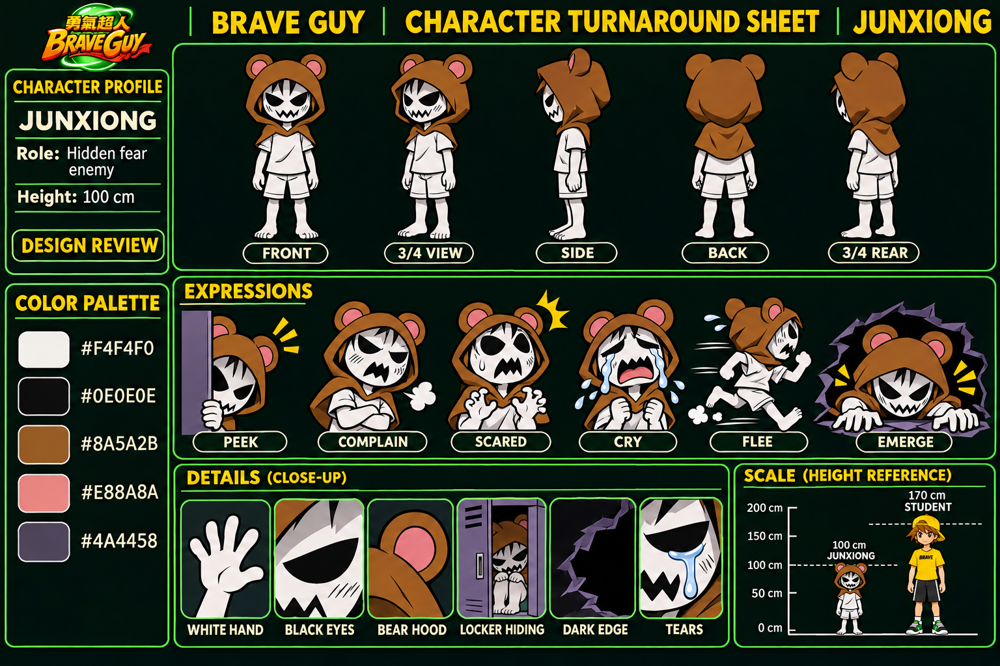
地獄超人
Logo 修訂稿 · 原生1536×1024 · 待驗收
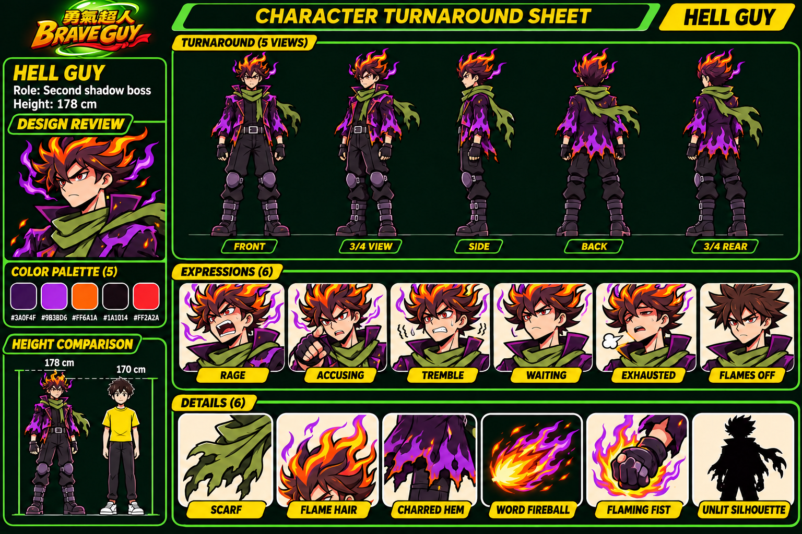
上班族主角
Logo 修訂稿 · 原生1536×1024 · 待驗收
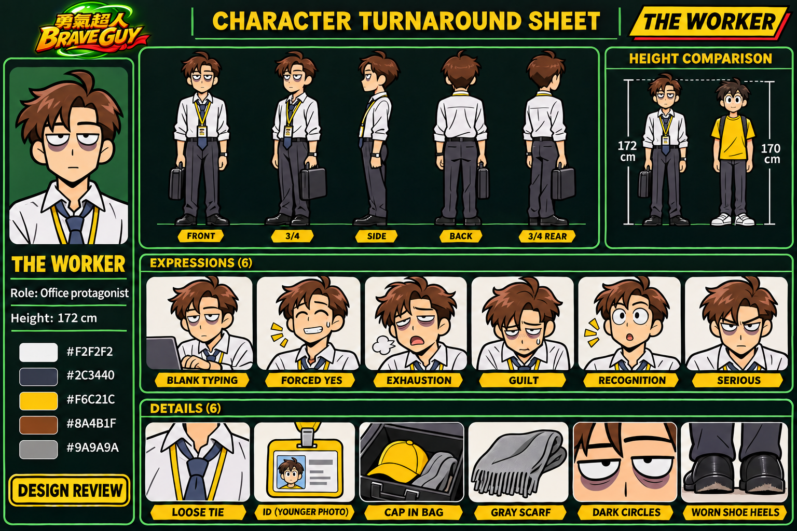
夢魘超人
Logo 修訂稿 · 原生1536×1024 · 待驗收
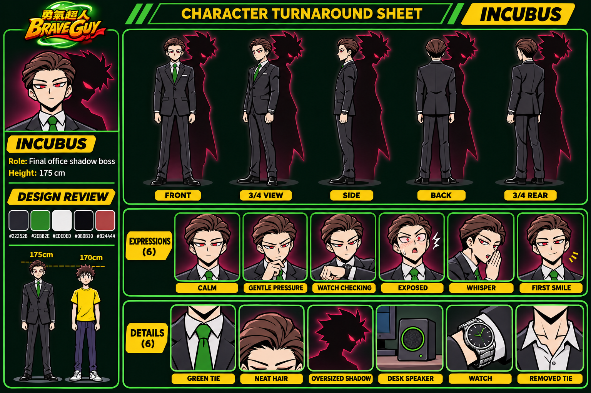
冠老闆
Logo 修訂稿 · 原生1536×1024 · 待驗收
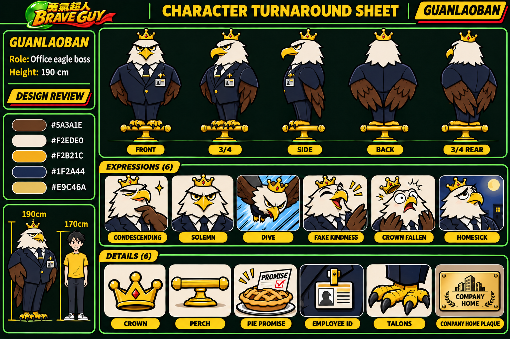
新雞
Logo 修訂稿 · 原生1536×1024 · 待驗收
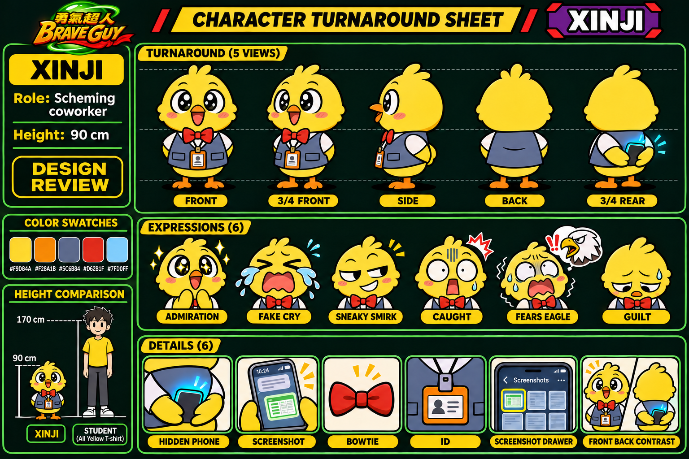
八卦蛇
Logo 修訂稿 · 原生1536×1024 · 待驗收
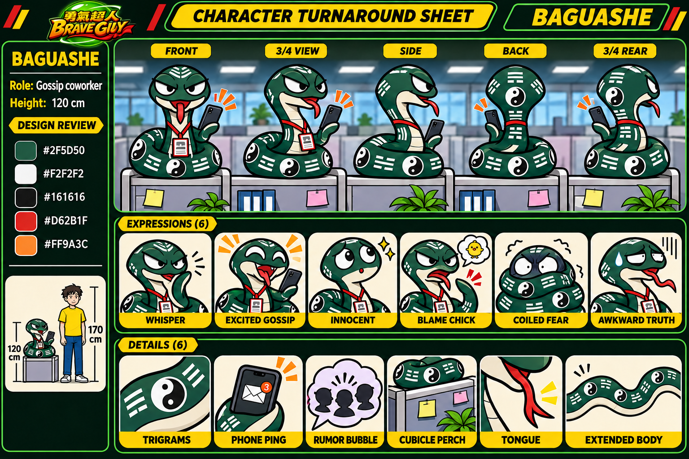